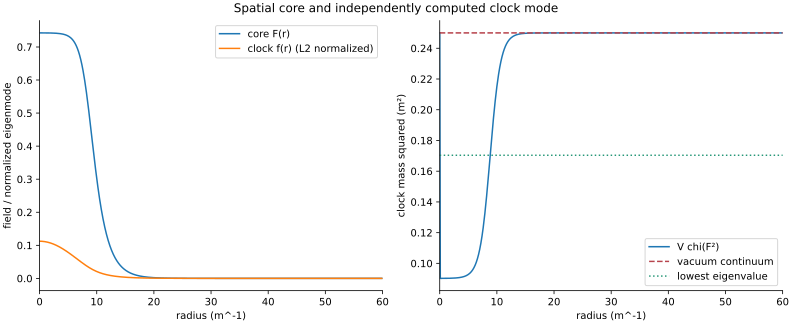
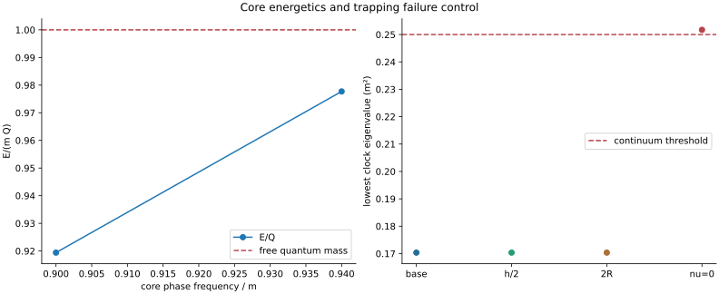
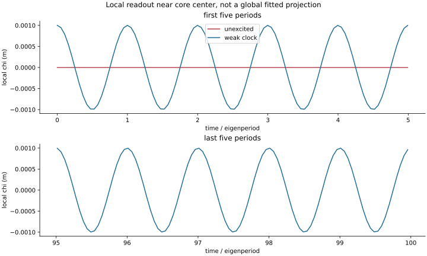
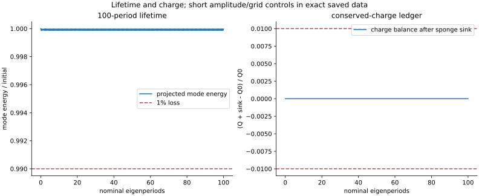

# Signal Space / GROSS Test 6 Technical completion: completed; bounded scientific classification: pass. Run run-080a63d117abd84d; analysis analysis-0001-2639af35. Solver revision 8c42249f03b447e814c9d8017ce2cc02c0484eed; renderer revision 8c42249f03b447e814c9d8017ce2cc02c0484eed. Flat decoupling limit of SS OCF 1, c=hbar=m=1; constant internal doublet direction, a=0, gravity decoupled. Four trial core frequencies 0.868, 0.875, 0.90, 0.94. Independently solved bound spectrum and trapping-off control. Nominal peak chi=0.001 for 100 eigenperiods; zero, half and double controls for 20 periods; independent h/2 and 2R controls for 20 periods. Selected branch: 0.900. No emergent geometry, Test 7 reception or nonspherical stability established. ## core-and-well Question: Which trial core supplies a spatial mass well and localized clock eigenfunction? Reading: Selected omega_Q=0.900; core center F=0.7426; clock eigenvalue 0.170362 below vacuum 0.25. Significance: The declared core density produces a spatially resolved clock mass well and a separately solved localized mode. Limitation: Flat spherical branch only; neither gravity nor nonspherical perturbations follow from this profile. ## bound-control Question: Does the bound eigenvalue survive resolution controls and disappear without trapping? Reading: Selected E/Q=0.919412; removing nu gives lowest eigenvalue 0.251711 versus 0.25 threshold. Eigen error estimate 2.82e-07. Significance: The trapping coefficient is causally relevant to this bound mode in the registered family. Limitation: A finite-box eigenvalue above 0.25 is a nonbound control. Radial Hessian diagnostics do not exclude all nonlinear or angular instabilities. ## local-trace Question: Does a local field trace tick for 100 periods when the unexcited core does not? Reading: Nominal local trace completes 100.00 inferred signed cycles; local frequency 0.412749 versus eigenfrequency 0.41275. Unexcited trace is zero. Significance: Unlike the stationary core density/projector, the field sampled inside the core has a repeatable local zero-crossing record. Limitation: This is an ideal local field probe in the flat limit. Marker coupling, device noise and invariant reception comparison are future tests. ## lifetime-convergence Question: Does the mode persist with controlled charge, amplitude, grid and boundary errors? Reading: Over 100 periods mode-energy loss 2.53e-05; maximum charge ledger error 1.44e-15; short-run frequency grid/domain difference 1.01e-05. Significance: The duration and numerical controls quantify whether this core can provisionally serve as Test 7 calibration. Limitation: Refined/wider runs and half/double amplitude controls cover 20 periods. An outer damping layer and untested nonspherical dynamics limit lifetime claims.



